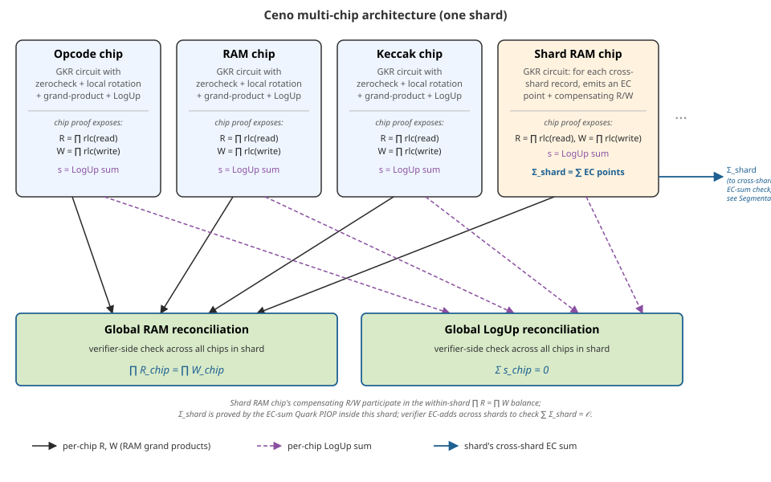
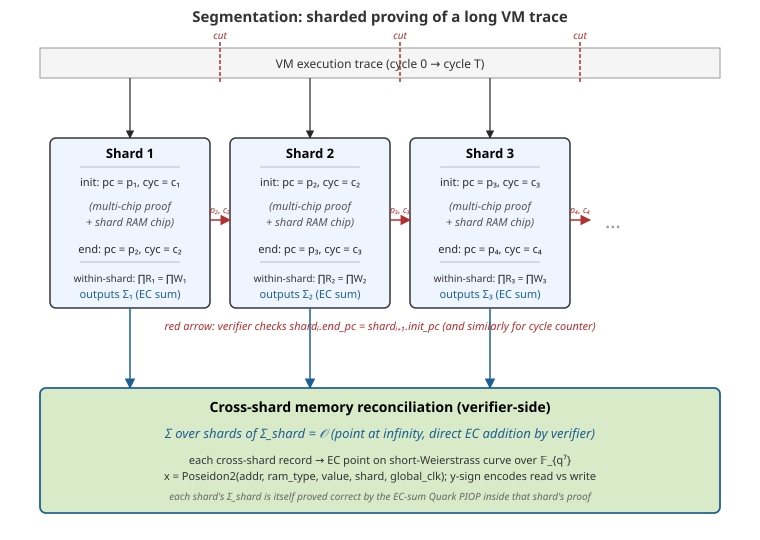
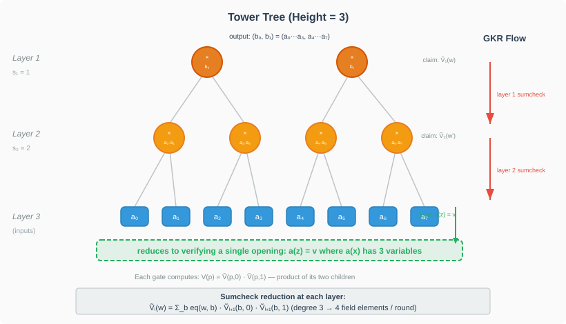

Ceno Project Overview
Ceno is a non-uniform, segmentable, and parallelizable RISC-V Zero-Knowledge Virtual Machine (zkVM). It allows for the execution of Rust code in a verifiable manner, leveraging the power of zero-knowledge proofs.
Key Features
- RISC-V Architecture: Ceno is built around the RISC-V instruction set, providing a standardized and open-source foundation for the virtual machine.
- Zero-Knowledge Proofs: The core of Ceno is its ability to generate zero-knowledge proofs of computation, ensuring that programs have been executed correctly without revealing any private inputs.
- Rust Support: Ceno is written in Rust and is designed to run programs also written in Rust, allowing developers to leverage the safety and performance of the Rust language.
- Modularity: The project is divided into several key components, each with a specific role in the Ceno ecosystem.
Project Structure
The Ceno workspace is organized into the following main crates:
ceno_cli: A command-line interface for interacting with the Ceno zkVM.ceno_emul: Provides emulation capabilities for the RISC-V instruction set.ceno_host: The host component responsible for managing the zkVM and orchestrating the proof generation process.ceno_rt: The runtime environment for guest programs running within the zkVM.ceno_zkvm: The core zkVM implementation, including the prover and verifier.examples: A collection of example programs that demonstrate how to use Ceno.
Getting Started
This chapter will guide you through setting up your local development environment for Ceno and running your first zero-knowledge program.
Local Build Requirements
Ceno is built in Rust, so you must install the Rust toolchain first.
We also use cargo-make to orchestrate the build process. You can install it with the following command:
cargo install cargo-make
Ceno executes RISC-V instructions, so you will also need to install the Risc-V target for Rust. You can do this with the following command:
rustup target add riscv32im-ceno-zkvm-elf
Installing cargo ceno
The cargo ceno command is the primary tool for interacting with the Ceno zkVM. You can install it by running the
following command from the root of the repository:
JEMALLOC_SYS_WITH_MALLOC_CONF="retain:true,metadata_thp:always,thp:always,dirty_decay_ms:-1,muzzy_decay_ms:-1,abort_conf:true" \
cargo install --git https://github.com/scroll-tech/ceno.git --features jemalloc --features nightly-features cargo-ceno
Building the Examples
The Ceno project includes a variety of examples to help you get started.
You can build all the examples using the cargo ceno command-line tool. Execute the following command in the Ceno
repository root directory:
cargo ceno build --example fibonacci
This command will compile the example fibonacci located in the examples/examples directory and place the resulting
ELF files in the examples/target/riscv32im-ceno-zkvm-elf/release directory.
Running an Example
Once the examples are built, you can run any of them using the cargo ceno run command. We will run the Fibonacci
example.
This example calculates the n-th Fibonacci number, where n is determined by a hint value provided at runtime. For
this guide, we will calculate the 1024-th number (corresponding to hint value 10 as 2^10=1024) in the sequence.
Execute the following command in the Ceno repository root directory to run the Fibonacci example with prove/verify:
cargo ceno prove --example fibonacci --hints=10 --public-io=4191
Let’s break down the command:
cargo ceno prove: This is the command to prove a Ceno program.--example fibonacci: This specifies that we want to run thefibonacciexample.--hints=10: This is a private input to our program. In this case, it tells the program to run 2^10 (1024) Fibonacci steps.--public-io=4191: This is the expected public output. The program will verify that the result of the computation matches this value.
If the command runs successfully, you have just run your first ZK program with Ceno! The next chapter will dive into the code for this example.
Your First ZK Program
In the previous chapter, you ran a pre-compiled Fibonacci example. Now, let’s look at the actual Rust code for that guest program and understand how it works.
The goal of this program is to calculate the n-th Fibonacci number inside the Ceno zkVM and then commit the result to
the public output.
The Code
Here is the complete source code for the Fibonacci example (examples/examples/fibonacci.rs):
extern crate ceno_rt;
fn main() {
// Compute the (1 << log_n) 'th fibonacci number, using normal Rust code.
let log_n: u32 = ceno_rt::read();
let mut a = 0_u32;
let mut b = 1_u32;
let n = 1 << log_n;
for _ in 0..n {
let mut c = a + b;
c %= 7919; // Modulus to prevent overflow.
a = b;
b = c;
}
// Constrain with public io
ceno_rt::commit(&b);
}Code Breakdown
Let’s break down the key parts of this program.
1. Importing the Ceno Runtime
#![allow(unused)]
fn main() {
extern crate ceno_rt;
}Every Ceno guest program needs to import the ceno_rt crate. This crate provides essential functions for interacting
with the zkVM environment, such as reading private inputs and committing public outputs.
2. Reading Private Inputs
fn main() {
let log_n: u32 = ceno_rt::read();
}The ceno_rt::read() function is used to read private data that the host provides. In the previous chapter, we passed
--hints=10. This is the value that ceno_rt::read() retrieves. The program receives it as an Archived<u32>, which
is then converted into a standard u32.
3. Core Logic
fn main() {
let mut a = 0_u32;
let mut b = 1_u32;
let n = 1 << log_n;
for _ in 0..n {
let mut c = a + b;
c %= 7919; // Modulus to prevent overflow.
a = b;
b = c;
}
}This is standard Rust code for calculating a Fibonacci sequence. It uses the log_n input to determine the number of
iterations (n = 1 << log_n, which is 2^10 = 1024). The calculation is performed modulo 7919 to keep the numbers
within a manageable size.
This is a key takeaway: You can write normal Rust code for your core computational logic.
4. Committing Public Output
fn main() {
ceno_rt::commit(&b);
}After the calculation is complete, ceno_rt::commit() is called. This function takes the final result (b) and commits
it as a public output of the zkVM. The host can then verify that the program produced the correct public output. In our
run command, this is checked against the --public-io=4191 argument.
Building the Program
To build this program so that it can be run inside the Ceno zkVM, you can use the cargo ceno build command:
cargo ceno build --example fibonacci
This will produce an ELF file at examples/target/riscv32im-ceno-zkvm-elf/release/fibonacci. This is the file that is
executed by the run command.
Running the Program
As you saw in the previous chapter, you can run the program with cargo ceno run:
cargo ceno run --example fibonacci --hints=10 --public-io=4191
or alternatively using the hints file to provide the hints:
cargo ceno run --example fibonacci --hints-file=hints.bin --public-io=4191
where hints.bin can be generated by the following rust program:
use std::fs::File;
use std::io::Write;
fn main() {
let mut file = File::create("hints.bin").unwrap();
file.write_all(&10u32.to_le_bytes()).unwrap();
}TODO: support generating hints file by running the guest program (possibly in a different mode, say, hint generating mode)
TODO: support providing public io also in binary file
Now that you understand the basic components of a Ceno program, the next section will explore the interaction between the host and the guest in more detail.
Host-Guest Interaction
A critical aspect of developing ZK applications is understanding how the “host” (the machine running the prover) and the “guest” (the ZK program running inside the vm) communicate with each other.
In Ceno, this communication happens in two main ways:
- Private Inputs (Hints): The host can pass private data to the guest.
- Public Inputs/Outputs (I/O): The guest can receive public data and commit to public outputs that the host can verify.
We saw both of these in the command used to run the Fibonacci example:
cargo ceno run --example fibonacci --hints=10 --public-io=4191
Private Inputs (Hints)
Private inputs, which Ceno refers to as “hints,” are data known only to the host and the guest. They are not revealed publicly and do not become part of the final proof. This is the primary way to provide secret inputs to your ZK program.
In the guest code, you use the ceno_rt::read() function to access this data.
Guest Code:
// Reads the private hint value provided by the host.
fn main() {
let log_n: u32 = ceno_rt::read();
// do something...
}Host Command:
... --hints=10 ...
In this interaction, the value 10 is passed from the host to the guest. The guest program reads this value and uses it
to determine how many Fibonacci iterations to perform. This input remains private.
Public Inputs and Outputs
Public I/O is data that is known to both the host and the verifier. It is part of the public record and is used to ensure the ZK program is performing the correct computation on the correct public data.
In Ceno, the guest program can commit data to the public record using the ceno_rt::commit() function.
Guest Code:
fn main() {
// do something ...
// Commits the final result `b` to the public output.
ceno_rt::commit(&b);
}Host Command:
... --public-io=4191 ...
Here, the guest calculates the final Fibonacci number and commits the result b. The Ceno host environment then checks
that this committed value is equal to the value provided in the --public-io argument (4191). If they do not match,
the proof will fail, indicating an incorrect computation or a different result than expected.
This mechanism is crucial for creating verifiable computations. You can use public I/O to:
- Provide public inputs that the program must use.
- Assert that the program produces a specific, known public output.
Generating and Verifying Proofs
The cargo ceno command provides a streamlined workflow for generating and verifying proofs of your ZK programs. This
is handled primarily by the keygen, prove and verify subcommands.
Here’s a more detailed look at the steps involved in generating a proof:
-
Key Generation (
cargo ceno keygen): Before proving, you need a proving key and a verification key. Thekeygencommand generates these keys for a given guest program.cargo ceno keygen --example <GUEST_EXAMPLE_NAME> --out-vk <PATH_TO_VERIFICATION_KEY_FILE> -
Proof Generation (using the witness): The final step is to use the proving key and the witness to generate the proof. The
provecommand automates this, but you can also perform this step manually using the lower-levelraw-provecommand if you have the ELF file, proving key, and witness.
By using cargo ceno prove, you get a simplified experience that handles these steps for you. For most use cases,
cargo ceno prove and cargo ceno verify are the primary commands you will use.
cargo ceno prove --example <GUEST_EXAMPLE_NAME> --hints=<HINTS_SEPARATED_BY_COMMA> --public-io=<PUBLIC_IO> --out-proof target/fibonacci.proof
Concrete Example
You can use ceno to generate proofs for your own custom Rust programs. Let’s walk through how to set up a new project
and use ceno with it.
1. Project Setup
First, create a new binary crate with cargo:
cargo new my-ceno-program
cd my-ceno-program
Your project will have the following structure:
my-ceno-program/
├── Cargo.toml
└── src/
└── main.rs
2. Cargo.toml
Next, you need to add ceno_rt as a dependency in your Cargo.toml. ceno_rt provides the runtime environment and
syscalls for guest programs.
[package]
name = "my-ceno-program"
version = "0.1.0"
edition = "2024"
[dependencies]
ceno_rt = { git = "https://github.com/scroll-tech/ceno.git" }
rkyv = { version = "0.8", default-features = false, features = [
"alloc",
"bytecheck",
] }
Note: For local development, you can use a path dependency: ceno_rt = { path = "../ceno/ceno_rt" }
Special notes, as ceno rely on nightly rust toolchain, please also add file rust-toolchain.toml with example content
[toolchain]
# refer toolchain from https://github.com/scroll-tech/ceno/blob/master/rust-toolchain.toml#L2
channel = "nightly-2025-11-20"
targets = ["riscv32im-unknown-none-elf"]
# We need the sources for build-std.
components = ["rust-src"]
3. Writing the Guest Program
Now, let’s write a simple guest program in src/main.rs. This program will read one u32 values from the input, add a
constant to it, and write the result to the output.
extern crate ceno_rt;
fn main() {
let a: u32 = ceno_rt::read();
let b: u32 = 3;
let c = a.wrapping_add(b);
ceno_rt::commit(&c);
}4. Building, Proving, and Verifying
With your custom program ready, you can use ceno to manage the workflow. These commands are typically run from the
root of your project (my-ceno-program).
4.1. Build the program
The build command compiles your guest program into a RISC-V ELF file.
cargo ceno build
This will create an ELF file at target/riscv32im-ceno-zkvm-elf/debug/my-ceno-program.
4.2. Generate Keys
Next, generate the proving and verification keys.
cargo ceno keygen --out-vk vk.bin
This will save the keys in a keys directory.
4.3. Generate a Proof
Now, run the program and generate a proof. You can provide input via the --stdin flag.
cargo ceno prove --hints=5 --public-io=8 --out-proof proof.bin
This command executes the ELF, generates a proof, and saves it as proof.bin.
4.4. Providing Inputs via File
In addition to providing hints and public I/O directly on the command line, you can also use files to provide these inputs. This is particularly useful for larger inputs or when you want to reuse the same inputs across multiple runs.
Hints via File
You can provide hints to the prover using the --hints-file flag. The hints file should be a raw binary file containing
the hint data. You can create this file using a simple Rust program. For example, to create a hints file with the value
5u32 and 8u32:
use std::fs::File;
use std::io::Write;
fn main() {
let mut file = File::create("hints.bin").unwrap();
file.write_all(&5u32.to_le_bytes()).unwrap();
}Then, you can use this file when generating a proof:
cargo ceno prove --hints-file hints.bin --public-io=8 --out-proof proof.bin
This approach is useful when you have a large amount of hint data that is inconvenient to pass through the command line.
4.5. Verify the Proof
Finally, verify the generated proof.
cargo ceno verify --vk vk.bin --proof proof.bin
If the proof is valid, you’ll see a success message. This workflow allows you to integrate ceno’s proving capabilities
into your own Rust projects.
The ceno CLI
The ceno command-line interface is the primary way to interact with the Ceno ZKVM. It allows you to build, run, and verify your ZK programs.
The available commands are:
cargo ceno build: Compiles a guest program written in Rust into a RISC-V ELF file.cargo ceno info: Provides information about a compiled ELF file, such as its size and segments.cargo ceno keygen: Generates a proving key and a verification key for a guest program.cargo ceno prove: Compiles, runs, and proves a Ceno guest program in one go.cargo ceno run: Executes a guest program.cargo ceno verify: Verifies a proof generated bycargo ceno prove.cargo ceno raw-keygen: A lower-level command to generate keys from a compiled ELF file.cargo ceno raw-prove: A lower-level command to prove a program from a compiled ELF file and a witness.cargo ceno raw-run: A lower-level command to run a program without the full proof generation, useful for debugging.
For detailed usage of each command, you can use the --help flag, for example: cargo ceno run --help. The next sections will explain the three core commands.
cargo ceno build
The cargo ceno build command compiles a Ceno program. It is a wrapper around the standard cargo build command, but it automatically sets the correct target and rustflags for building Ceno programs.
Usage
cargo ceno build [OPTIONS]
Options
The build command accepts all the same options as cargo build. Some of the most common options are:
--example <NAME>: Build a specific example.--release: Build in release mode.--package <NAME>or-p <NAME>: Specify which package to build.--workspace: Build all packages in the workspace.
For a full list of options, run cargo ceno build --help.
Run, prove, and keygen
The run, prove, and keygen commands are used to execute Ceno programs. They all share a similar set of options.
cargo ceno run: Executes a Ceno program in the ZKVM.cargo ceno prove: Executes a Ceno program and generates a proof of its execution.cargo ceno keygen: Generates a proving key and a verification key for a Ceno program.
Usage
cargo ceno run [OPTIONS]
cargo ceno prove [OPTIONS]
cargo ceno keygen [OPTIONS]
Options
These commands accept all the same options as cargo build. Some of the most common options are:
--example <NAME>: Run a specific example.--release: Run in release mode.--package <NAME>or-p <NAME>: Specify which package to run.
In addition, the prove and keygen commands have some Ceno-specific options:
--proof <PATH>: Path to the output proof file (forprove). Defaults toproof.bin.--out-vk <PATH>: Path to the output verification key file (forkeygen). Defaults tovk.bin.
For a full list of options, run cargo ceno <COMMAND> --help.
Raw Commands
The raw-run, raw-prove, and raw-keygen commands are lower-level commands that operate on ELF files directly. These are useful for debugging and for integrating Ceno with other build systems.
cargo ceno raw-run
Executes a pre-compiled ELF file in the Ceno ZKVM.
Usage
cargo ceno raw-run <ELF_PATH>
cargo ceno raw-prove
Generates a proof for a pre-compiled ELF file.
Usage
cargo ceno raw-prove <ELF_PATH>
cargo ceno raw-keygen
Generates a proving key and a verification key for a pre-compiled ELF file.
Usage
cargo ceno raw-keygen <ELF_PATH>
Walkthroughs of Examples
This chapter will contain detailed walkthroughs of selected examples from the examples/ directory.
Fibonacci
The fibonacci example computes the n-th Fibonacci number, where n is a power of 2. The purpose of this example is to show how to perform a simple computation within the zkVM.
Guest Code
The guest program for the fibonacci example is located at examples/examples/fibonacci.rs.
extern crate ceno_rt;
fn main() {
// Compute the (1 << log_n) 'th fibonacci number, using normal Rust code.
let log_n: u32 = ceno_rt::read();
let mut a = 0_u32;
let mut b = 1_u32;
let n = 1 << log_n;
for _ in 0..n {
let mut c = a + b;
c %= 7919; // Modulus to prevent overflow.
a = b;
b = c;
}
// Constrain with public io digest.
ceno_rt::commit(&b.to_le_bytes());
}The guest program reads a private input log_n from the host. This input determines the number of iterations to perform. The program then calculates n = 1 << log_n and computes the n-th Fibonacci number using a standard iterative approach. To prevent the numbers from growing too large, the computation is performed modulo 7919. Finally, the program commits the result back to the host as a public output.
This example demonstrates the basic workflow of a Ceno zkVM program: reading private inputs, performing computations, and committing public outputs. It shows that you can write standard Rust code for the guest, and the zkVM will execute it.
Is Prime
The is_prime example counts the number of prime numbers up to a given integer n. This example showcases a slightly more complex algorithm and control flow.
Guest Code
The guest program for the is_prime example is located at examples/examples/is_prime.rs.
extern crate ceno_rt;
fn is_prime(n: u32) -> bool {
if n < 2 {
return false;
}
let mut i = 2;
while i * i <= n {
if n.is_multiple_of(i) {
return false;
}
i += 1;
}
true
}
fn main() {
let n: u32 = ceno_rt::read();
let mut cnt_primes = 0;
for i in 0..=n {
cnt_primes += is_prime(i) as u32;
}
if cnt_primes > 1000 * 1000 {
panic!();
}
}The guest program reads an integer n from the host. It then iterates from 0 to n, checking if each number is prime using a helper function is_prime. The is_prime function implements the trial division method. The total count of prime numbers is accumulated in cnt_primes. If the count of primes exceeds a certain threshold, the program will panic. This demonstrates how to handle exceptional cases in the guest. The program does not commit any public output, but the proof generated by the zkVM still guarantees that the computation was performed correctly.
This example highlights the ability to define and use helper functions within the guest code, as well as the use of control flow constructs like loops and conditional statements.
BN254 Curve Syscalls
The bn254_curve_syscalls example demonstrates the use of syscalls for elliptic curve operations on the BN254 curve. This is useful for cryptographic applications that require curve arithmetic.
Guest Code
The guest program for the bn254_curve_syscalls example is located at examples/examples/bn254_curve_syscalls.rs.
// Test addition of two curve points. Assert result inside the guest
extern crate ceno_rt;
use ceno_syscall::{syscall_bn254_add, syscall_bn254_double};
use substrate_bn::{AffineG1, Fr, G1, Group};
fn bytes_to_words(bytes: [u8; 64]) -> [u32; 16] {
let mut bytes = bytes;
// Reverse the order of bytes for each coordinate
bytes[0..32].reverse();
bytes[32..].reverse();
std::array::from_fn(|i| u32::from_le_bytes(bytes[4 * i..4 * (i + 1)].try_into().unwrap()))
}
fn g1_to_words(elem: G1) -> [u32; 16] {
let elem = AffineG1::from_jacobian(elem).unwrap();
let mut x_bytes = [0u8; 32];
elem.x().to_big_endian(&mut x_bytes).unwrap();
let mut y_bytes = [0u8; 32];
elem.y().to_big_endian(&mut y_bytes).unwrap();
let mut bytes = [0u8; 64];
bytes[..32].copy_from_slice(&x_bytes);
bytes[32..].copy_from_slice(&y_bytes);
bytes_to_words(bytes)
}
fn main() {
let a = G1::one() * Fr::from_str("237").unwrap();
let b = G1::one() * Fr::from_str("450").unwrap();
let mut a = g1_to_words(a);
let b = g1_to_words(b);
log_state(&a);
log_state(&b);
syscall_bn254_add(&mut a, &b);
assert_eq!(
a,
[
3533671058, 384027398, 1667527989, 405931240, 1244739547, 3008185164, 3438692308,
533547881, 4111479971, 1966599592, 1118334819, 3045025257, 3188923637, 1210932908,
947531184, 656119894
]
);
log_state(&a);
let c = G1::one() * Fr::from_str("343").unwrap();
let mut c = g1_to_words(c);
log_state(&c);
syscall_bn254_double(&mut c);
log_state(&c);
let one = g1_to_words(G1::one());
log_state(&one);
syscall_bn254_add(&mut c, &one);
log_state(&c);
// 2 * 343 + 1 == 237 + 450, one hopes
assert_eq!(a, c);
}
#[cfg(debug_assertions)]
fn log_state(state: &[u32]) {
use ceno_rt::info_out;
info_out().write_frame(unsafe {
core::slice::from_raw_parts(state.as_ptr() as *const u8, size_of_val(state))
});
}
#[cfg(not(debug_assertions))]
fn log_state(_state: &[u32]) {}The guest program initializes two points on the BN254 curve. It then uses the syscall_bn254_add syscall to add the two points and asserts that the result is correct by comparing it with a pre-computed value. It also demonstrates the use of the syscall_bn254_double syscall to double a point. The program includes helper functions to convert between different representations of curve points.
This example showcases how to leverage syscalls to perform complex and computationally expensive operations. By using syscalls, the guest can delegate these operations to the host, which can often execute them more efficiently. The guest can still verify the results of the syscalls to ensure the integrity of the computation.
Ceno RT Alloc
The ceno_rt_alloc example shows how to use the allocator in the Ceno runtime to allocate memory on the heap.
Guest Code
The guest program for the ceno_rt_alloc example is located at examples/examples/ceno_rt_alloc.rs.
use core::ptr::{addr_of, read_volatile};
extern crate ceno_rt;
extern crate alloc;
use alloc::{vec, vec::Vec};
static mut OUTPUT: u32 = 0;
fn main() {
// Test writing to a global variable.
unsafe {
OUTPUT = 0xf00d;
black_box(addr_of!(OUTPUT));
}
// Test writing to the heap.
let v: Vec<u32> = vec![0xbeef];
black_box(&v[0]);
// Test writing to a larger vector on the heap
let mut v: Vec<u32> = vec![0; 128 * 1024];
ceno_syscall::syscall_phantom_log_pc_cycle("finish allocation");
v[999] = 0xdead_beef;
black_box(&v[0]);
ceno_syscall::syscall_phantom_log_pc_cycle("start fibonacci");
let log_n: u32 = 12;
let mut a = 0_u32;
let mut b = 1_u32;
let n = 1 << log_n;
for _ in 0..n {
let mut c = a + b;
c %= 7919; // Modulus to prevent overflow.
a = b;
b = c;
}
ceno_syscall::syscall_phantom_log_pc_cycle("end fibonacci");
// write to heap which allocated earlier shard
v[999] = 0xbeef_dead;
let mut v: Vec<u32> = vec![0; 128 * 1024];
// write to heap allocate in current non-first shard
v[0] = 0xdead_beef;
}
/// Prevent compiler optimizations.
fn black_box<T>(x: *const T) -> T {
unsafe { read_volatile(x) }
}The guest program demonstrates three different memory operations. First, it writes to a global static variable. Second, it allocates a small Vec on the heap. Third, it allocates a much larger Vec on the heap and writes a value to an element in it. The black_box function is used to ensure that the compiler does not optimize away these memory operations.
This example is important for understanding how memory management works in the Ceno zkVM. It shows that the guest has access to both static memory and heap memory, and can perform dynamic memory allocation.
Keccak Syscall
The keccak_syscall example demonstrates how to use a syscall to perform the Keccak permutation, which is the core of the Keccak hash function (used in SHA-3).
Guest Code
The guest program for the keccak_syscall example is located at examples/examples/keccak_syscall.rs.
//! Compute the Keccak permutation using a syscall.
//!
//! Iterate multiple times and log the state after each iteration.
extern crate ceno_rt;
use ceno_syscall::syscall_keccak_permute;
const ITERATIONS: usize = 100;
fn main() {
let mut state = [0_u64; 25];
for i in 0..ITERATIONS {
syscall_keccak_permute(&mut state);
if i == 0 {
log_state(&state);
}
}
}
#[cfg(debug_assertions)]
fn log_state(state: &[u64; 25]) {
use ceno_rt::info_out;
info_out().write_frame(unsafe {
core::slice::from_raw_parts(state.as_ptr() as *const u8, state.len() * size_of::<u64>())
});
}
#[cfg(not(debug_assertions))]
fn log_state(_state: &[u64; 25]) {}The guest program initializes a 25-word state and then enters a loop where it repeatedly applies the Keccak permutation to the state using the syscall_keccak_permute syscall. The log_state function is used to log the state after the first permutation, which can be useful for debugging.
This example further illustrates the power of syscalls. The Keccak permutation is a complex operation, and implementing it efficiently in the guest would be challenging. By providing it as a syscall, the Ceno platform makes it easy for guest programs to use this important cryptographic primitive.
Median
The median example shows how to find the median of a list of numbers. It demonstrates a common pattern where the host provides a candidate answer, and the guest verifies it.
Guest Code
The guest program for the median example is located at examples/examples/median.rs.
//! Find the median of a collection of numbers.
//!
//! Of course, we are asking our good friend, the host, for help, but we still need to verify the answer.
extern crate ceno_rt;
use ceno_rt::debug_println;
#[cfg(debug_assertions)]
use core::fmt::Write;
fn main() {
let numbers: Vec<u32> = ceno_rt::read();
let median_candidate: u32 = ceno_rt::read();
let smaller = numbers.iter().filter(|x| **x < median_candidate).count();
assert_eq!(smaller, numbers.len() / 2);
debug_println!("{}", median_candidate);
}The guest program reads a list of numbers and a median candidate from the host. It then verifies that the candidate is indeed the median by counting the number of elements in the list that are smaller than the candidate. If the count is equal to half the length of the list, the assertion passes, and the program successfully completes.
This example showcases a powerful pattern for zkVM programming: verifiable computation. The host, which is not constrained by the limitations of the zkVM, can perform a complex computation (like finding the median of a large list) and then provide the answer to the guest. The guest’s task is then to perform a much simpler computation to verify that the host’s answer is correct. This allows for the verification of complex computations that would be too expensive to perform directly in the zkVM.
Sorting
The sorting example demonstrates how to sort a list of numbers inside the guest.
Guest Code
The guest program for the sorting example is located at examples/examples/sorting.rs.
extern crate ceno_rt;
use ceno_rt::debug_println;
#[cfg(debug_assertions)]
use core::fmt::Write;
fn main() {
let mut scratch: Vec<u32> = ceno_rt::read();
scratch.sort();
// Print any output you feel like, eg the first element of the sorted vector:
debug_println!("{}", scratch[0]);
}The guest program reads a list of numbers from the host, creates a mutable copy of it, and then sorts the copy using the standard sort method from the Rust standard library. The debug_println! macro is used to print the first element of the sorted vector, which can be useful for debugging.
This example demonstrates that the Ceno zkVM supports a significant portion of the Rust standard library, including common data structures and algorithms. This makes it easy to write complex programs for the guest, as you can leverage the power and convenience of the standard library.
Advanced Topics
This chapter is for developers who want to dive deeper into the internals of Ceno.
Guest Programming (ceno_rt)
The ceno_rt crate provides the runtime environment for guest programs running inside the Ceno ZKVM. It offers essential functionalities for interacting with the host and the ZKVM environment.
Execution Environment
A guest program’s execution begins at the _start symbol, which is defined in ceno_rt. This entry point sets up the global pointer and stack, and then calls the standard Rust main function.
After main returns, or to exit explicitly, the program can call ceno_rt::halt(exit_code). An exit_code of 0 indicates success.
Key features of ceno_rt include:
Memory-Mapped I/O (mmio)
The ceno_rt::mmio module provides a way to read data provided by the host through memory-mapped regions.
- Hints: These are private inputs from the host. You can read them using
ceno_rt::mmio::read_slice()to get a byte slice orceno_rt::mmio::read::<T>()to deserialize a specific type. - Public I/O: The
ceno_rt::mmio::commitfunction is used to reveal public outputs. It verifies that the output produced by the guest matches the expected output provided by the host.
Standard I/O (io)
The ceno_rt::io module contains IOWriter for writing data. In debug builds, a global IOWriter instance is available through ceno_rt::io::info_out(). You can use the debug_print! and debug_println! macros for logging during development.
Dynamic Memory (allocator)
For dynamic memory needs, ceno_rt::allocator provides a simple allocator.
System Calls (syscalls)
The ceno_rt::syscalls module offers low-level functions to access precompiled operations for performance-critical tasks. For more details, see the “Accelerated Operations with Precompiles” chapter.
Weakly Linked Functions
ceno_rt defines several weakly linked functions (e.g., sys_write, sys_alloc_words, sys_rand) that provide default implementations for certain system-level operations. These can be overridden by the host environment.
When writing a guest program, you will typically include ceno_rt as a dependency in your Cargo.toml.
Accelerated Operations with Precompiles (Syscalls)
Ceno provides “precompiles” to accelerate common, computationally intensive operations. These are implemented as syscalls that the guest program can invoke. Using precompiles is much more efficient than executing the equivalent logic in standard RISC-V instructions.
Using Precompiles
To use a precompile, you need to call the corresponding function from the ceno_rt::syscalls module in your guest code.
For example, to compute a Keccak permutation, you can use syscall_keccak_permute:
#![allow(unused)]
fn main() {
use ceno_rt::syscalls::syscall_keccak_permute;
let mut state = [0u64; 25];
// ... initialize state ...
syscall_keccak_permute(&mut state);
}Available Precompiles
Ceno currently offers the following precompiles:
-
Hashing:
syscall_keccak_permute: For Keccak-f[1600] permutation, the core of Keccak and SHA-3.syscall_sha256_extend: For the SHA-256 message schedule (Wtable) extension.
-
Cryptography:
syscall_secp256k1_add: Elliptic curve addition on secp256k1.syscall_secp256k1_double: Elliptic curve point doubling on secp256k1.syscall_secp256k1_decompress: Decompress a secp256k1 public key.syscall_bn254_add: Elliptic curve addition on BN254.syscall_bn254_double: Elliptic curve point doubling on BN254.syscall_bn254_fp_addmod,syscall_bn254_fp_mulmod: Field arithmetic for BN254’s base field.syscall_bn254_fp2_addmod,syscall_bn254_fp2_mulmod: Field arithmetic for BN254’s quadratic extension field.
You can find examples of how to use each of these syscalls in the examples/ directory of the project.
Profiling & Performance
Ceno includes tools to help you analyze and optimize the performance of your ZK programs.
Execution Profiling
You can profile the execution of your guest program by using the --profiling flag with the cargo ceno run or other binary commands. This will output detailed statistics about the execution, such as cycle counts for different parts of the program.
For example:
cargo ceno run --profiling=1 -- <your_program>
The value passed to --profiling controls the granularity of the profiling information.
The output will show a tree of spans with timing information, allowing you to identify performance bottlenecks in your code.
Benchmarking
The ceno_zkvm crate contains a benches directory with several benchmarks. You can use these as a reference for writing your own benchmarks using criterion.
Running the benchmarks can give you an idea of the performance of different operations and help you optimize your code. To run the benchmarks, you can use the standard cargo bench command.
Concurrent Chip Proving
This document describes the concurrent chip proving mechanism on the GPU, centered around a memory-aware parallel scheduler that uses a greedy backfilling algorithm to maximize GPU utilization while respecting VRAM limits.
Motivation
Previously, chip proofs were generated sequentially — one circuit at a time. This left significant GPU idle time, especially when small chip proofs could run in parallel with large ones. The scheduler overlaps chip proofs concurrently with preemptive memory reservation, improving overall proving throughput.
Architecture Overview
The prover’s create_proof_of_shard is restructured into three clean phases:
┌────────────────────────────────────────────────────────────────────────────────┐
│ create_proof_of_shard │
│ │
│ ┌──────────────────────┐ ┌──────────────────────┐ ┌──────────────────────┐ │
│ │ Phase 1: BUILD │ │ Phase 2: EXECUTE │ │ Phase 3: COLLECT │ │
│ │ build_chip_tasks │─>│ run_chip_proofs │─>│ collect_chip_results │ │
│ │ │ │ │ │ │ │
│ │ - Iterate circuits │ │ CPU: sequential │ │ - Aggregate proofs │ │
│ │ - Build ChipTask │ │ GPU: scheduler │ │ into BTreeMap │ │
│ │ - Estimate GPU mem │ │ concurrent exec │ │ - Collect opening │ │
│ │ - GPU: defer witness │ │ with backfilling │ │ points & evals │ │
│ │ - CPU: eager witness │ │ - Transcript forking │ │ - Merge PI updates │ │
│ │ │ │ handled internally │ │ - Merge transcript │ │
│ └──────────────────────┘ └──────────────────────┘ └──────────────────────┘ │
└────────────────────────────────────────────────────────────────────────────────┘
Scheduler Core: Greedy Backfilling Algorithm
The scheduler sorts all chip proof tasks by estimated GPU memory (descending), then greedily assigns the largest task that fits into currently available VRAM. When nothing fits, it blocks until a running task completes and frees memory.
┌──────────────────────────────────────────────────────────────────────────┐
│ ChipScheduler::execute_concurrently │
│ │
│ Input: Vec<ChipTask> (unsorted) │
│ │
│ Step 1: Sort by estimated_memory_bytes DESC ("big rocks first") │
│ ┌───────────────────────────────────────────────────────────────┐ │
│ │ Task A (800MB) > Task B (400MB) > Task C (200MB) > Task D ... │ │
│ └───────────────────────────────────────────────────────────────┘ │
│ │
│ Step 2: Spawn N worker threads (N = min(stream_pool_size, #tasks)) │
│ ┌────────────┐ ┌────────────┐ ┌────────────┐ │
│ │ Worker 0 │ │ Worker 1 │ │ Worker 2 │ ... │
│ │ (stream) │ │ (stream) │ │ (stream) │ ... │
│ └────────────┘ └────────────┘ └────────────┘ │
│ Each worker: shared task_rx (Mutex<Receiver>), own done_tx (Sender) │
│ │
│ Step 3: Scheduling loop (main thread) │
│ ┌───────────────────────────────────────────────────────────────┐ │
│ │ Begin │ │
│ │ │ │ │
│ │ ┌───────────────────────────────────────────────┐ │ │
│ │ ▼ │ │ │
│ │ ┌────────────────────┐ │ │ │
│ │ │ Drain completions │◄── try_recv() (non-blocking) │ │ │
│ │ │ release VRAM │ unbook_capacity() │ │ │
│ │ └────────────────────┘ │ │ │
│ │ │ │ │ │
│ │ ▼ │ │ │
│ │ ┌────────────────────┐ YES ┌──────────────────┐ │ │ │
│ │ │ Pending task fits │────>│ book_capacity() ├─────────>┤ │ │
│ │ │ in VRAM? │ │ send to worker │ continue │ │ │
│ │ └────────────────────┘ └──────────────────┘ │ │ │
│ │ │ NO │ │ │
│ │ ▼ │ │ │
│ │ ┌────────────────────┐ YES ┌─────────────────────────┐ │ │ │
│ │ │ inflight == 0? │────>│ DEADLOCK: Return Error. │ │ │ │
│ │ └────────────────────┘ └─────────────────────────┘ │ │ │
│ │ │ NO │ │ │
│ │ ▼ │ │ │
│ │ ┌────────────────────┐ │ │ │
│ │ │ Block: wait for │ │ │ │
│ │ │ next completion │ │ │ │
│ │ └────────┬───────────┘ │ │ │
│ │ │ recv() (blocking) ──> free VRAM │ │ │
│ │ └──────────────────────────────────────────────>┘ │ │
│ │ │ │ │
│ │ │ pending.is_empty() && inflight == 0 │ │
│ │ ▼ │ │
│ │ Exit │ │
│ └───────────────────────────────────────────────────────────────┘ │
│ │
│ Step 4: Sort results by task_id to restore deterministic order │
└──────────────────────────────────────────────────────────────────────────┘
Scheduling Example (Timeline)
Consider 4 tasks on a GPU with 1200MB available VRAM and 4 worker streams:
Tasks (sorted by memory, descending):
A: 800MB B: 400MB C: 200MB D: 50MB
────────────────────────────────────────────────────────────────── time ────────────────────>
400MB 0MB 400MB 200 150MB 1200MB <── Mem Pool (free space)
│ │ │ │ │ │
t0 t1 t2 t3 t4 t5
│ │ │ │ │ │
▼ ▼ ▼ ▼ ▼ ▼
┌─────────────────────────────────┐
│ Task A (800MB) │ ─── try_book: 1200-800=400MB, fits! book @ t0
└─────────────────────────────────┘ unbook @ t5
┌────────────────┐
...│ Task B (400MB) │ ─── try_book: 400-400=0MB, fits! book @ t1
└────────────────┘ unbook @ t2
┌──────────┐
......................│ C(200MB) │ ─── try_book: pool full (0MB free), wait
└──────────┘ ... book @ t3: 400-200=200MB, fits!
┌───────┐
........................│ D(50) │ ─── try_book: pool full (0MB free), wait
└───────┘ ... book @ t4: 200-50=150MB, fits!
Legend:
t0: Launch A (800MB). Pool: 400MB free.
t1: B (400MB) fits remaining 400MB. Launch B. Pool: 0MB free.
t2: B completes → unbook 400MB.
t3: C (200MB) fits. Launch.
t4: D (50MB) fits. Launch.
t5: All done.
GPU Memory Estimation
Before scheduling, each task’s peak GPU memory is estimated without executing it. The formula computes resident (always occupied) + max(stage temporaries).
┌───────────────────────────────────────────────────────────────────────┐
│ estimate_chip_proof_memory(cs, input, name) │
│ │
│ ┌─── Resident Memory (always occupied) ─────────────────────────┐ │
│ │ │ │
│ │ trace_resident = witness_mle_bytes + structural_mle_bytes │ │
│ │ (num_witin * 2^num_vars * sizeof(BabyBear)) │ │
│ │ + (num_structural * 2^num_vars * sizeof(BB)) │ │
│ │ │ │
│ │ main_witness = num_records * 2^num_vars * sizeof(BabyBearExt4)│ │
│ │ (records = reads + writes + lk_num + lk_den) │ │
│ │ │ │
│ └───────────────────────────────────────────────────────────────┘ │
│ │
│ ┌─── Stage Temporaries (only one active at a time) ───────────────┐ │
│ │ │ │
│ │ ┌─────────────┐ ┌─────────────┐ ┌─────────────┐ ┌─────────────┐ │ │
│ │ │ Trace │ │ Tower │ │ ECC Quark │ │ Main GKR │ │ │
│ │ │ Extraction │ │ Build+Prove │ │ Sumcheck │ │ Zerocheck + │ │ │
│ │ │ (2x witness │ │ (prod + │ │ (selectors │ │ Rotation │ │ │
│ │ │ temp_buf) │ │ logup) │ │ + splits) │ │ sumcheck │ │ │
│ │ └─────────────┘ └─────────────┘ └─────────────┘ └─────────────┘ │ │
│ │ └──────────────┴──────────────┴──────────────┘ │ │
│ │ max(temporaries) │ │
│ │ │ │
│ └─────────────────────────────────────────────────────────────────┘ │
│ │
│ TOTAL = trace_resident + main_witness + max(temporaries) + 5MB │
└───────────────────────────────────────────────────────────────────────┘
Dev-Mode Validation
Set CENO_GPU_MEM_TRACKING=1 CENO_CONCURRENT_CHIP_PROVING=0 to enable
estimation validation. Each proving stage compares estimated vs actual GPU
memory, asserting:
- Under-estimate tolerance: 1MB (actual may exceed estimate by at most 1MB)
- Over-estimate margin: 5MB (estimate may exceed actual by at most 5MB)
Per-Task Execution Flow (GPU Concurrent)
Each worker thread runs an independent chip proof with its own CUDA stream and forked transcript:
┌──────────────────────────────────────────────────────────────────┐
│ Worker Thread (per ChipTask) │
│ │
│ 1. Acquire pool CUDA stream │
│ cuda_hal.get_pool_stream() │
│ bind_thread_stream(stream) ◄── thread-local CUDA stream │
│ │
│ 2. Fork transcript (deterministic) │
│ local_transcript = clone(parent) │
│ local_transcript.append(task_id) │
│ local_transcript.append(circuit_idx) │
│ │
│ 3. Deferred witness extraction (GPU JIT) │
│ extract_witness_mles_for_trace(pcs_data, idx, ..) │
│ transport_structural_witness_to_gpu(rmm, ..) │
│ │
│ 4. Chip proof pipeline (standalone _impl functions) │
│ ┌──────────────────────────────────────┐ │
│ │ [optional] prove_ec_sum_quark_impl │ │
│ │ │ │ │
│ │ ▼ │ │
│ │ build_main_witness (GKR witness gen) │ │
│ │ │ │ │
│ │ ▼ │ │
│ │ prove_tower_relation_impl │ │
│ │ (product + logup tower build & prove)│ │
│ │ │ │ │
│ │ ▼ │ │
│ │ prove_main_constraints_impl │ │
│ │ (GKR zerocheck + rotation sumcheck) │ │
│ └──────────────────────────────────────┘ │
│ │
│ 5. Sample from forked transcript, send CompletionMessage │
│ forked_sample = transcript.sample_vec(1)[0] │
│ done_tx.send(CompletionMessage { result, mem, sample }) │
│ │
│ 6. Panic safety: catch_unwind wraps entire execution │
│ Converts panics to ZKVMError, prevents scheduler deadlock │
└──────────────────────────────────────────────────────────────────┘
Thread Safety Design
The concurrent scheduler must avoid Send/Sync requirements on
ZKVMProver and GpuProver. The solution:
┌──────────────────────────────────────────────────────────────────┐
│ Thread Safety Architecture │
│ │
│ Problem: ZKVMProver holds non-Send/Sync state (Rc, closures) │
│ │
│ Solution: Standalone _impl functions │
│ ┌───────────────────────────────────────────────────────────┐ │
│ │ │ │
│ │ Original trait methods Standalone functions │ │
│ │ (require &self) (no &self, Send+Sync args) │ │
│ │ │ │
│ │ device.prove_tower_relation ─> prove_tower_relation_impl │ │
│ │ device.prove_main_constraints> prove_main_constraints_impl│ │
│ │ device.prove_ec_sum_quark ──> prove_ec_sum_quark_impl │ │
│ │ self.create_chip_proof ─────> create_chip_proof_gpu_impl │ │
│ │ │ │
│ │ Trait methods delegate to standalone functions. │ │
│ │ Concurrent path calls standalone functions directly. │ │
│ │ Sequential path uses self.create_chip_proof (trait). │ │
│ └───────────────────────────────────────────────────────────┘ │
│ │
│ Shared data across threads: │
│ ┌────────────────────────────────────────────────────────────┐ │
│ │ transcript ──> SyncRef wrapper (read-only, cloned per task)│ │
│ │ pcs_data ───> SyncRef wrapper (read-only via get_trace) │ │
│ │ Rc<Backend> ─> Arc<Backend> (Rc→Arc migration) │ │
│ │ CudaHalBB31 ─> Arc (was Mutex-guarded, now lock-free) │ │
│ └────────────────────────────────────────────────────────────┘ │
│ │
│ Per-thread isolation: │
│ ┌───────────────────────────────────────────────────────────┐ │
│ │ CUDA stream ──> thread_local! { THREAD_CUDA_STREAM } │ │
│ │ transcript ───> cloned per task + task_id appended │ │
│ │ GPU memory ──> preemptively booked from shared CudaMemPool│ │
│ └───────────────────────────────────────────────────────────┘ │
└──────────────────────────────────────────────────────────────────┘
Deferred Witness Extraction (GPU)
On the GPU path, witness polynomials are not extracted from PCS data during Phase 1. Instead, they are extracted just-in-time when a worker begins executing a task. This reduces peak VRAM usage.
┌──────────────────────────────────────────────────────────────────────┐
│ CPU Path (Eager) GPU Path (Deferred) │
│ │
│ Phase 1: extract_witness_mles() witness = vec![] (empty) │
│ build_tasks transport_structural() structural = vec![] (empty) │
│ structural_rmm = None structural_rmm = Some(rmm) │
│ │
│ Phase 2: create_chip_proof() create_chip_proof_gpu_impl() │
│ execute (input already filled) extract_witness_mles_for_ │
│ trace(pcs_data, idx, ..) │
│ transport_structural_ │
│ witness_to_gpu(rmm, ..) │
│ (now input is populated) │
│ ... proceed with proving │
└──────────────────────────────────────────────────────────────────────┘
Configuration
| Environment Variable | Default | Description |
|---|---|---|
CENO_CONCURRENT_CHIP_PROVING | 1 (enabled) | Set to 0 for sequential execution |
CENO_SCHEDULER_WORKERS_NUM | 64 | Number of concurrent CUDA streams |
CENO_GPU_MEM_TRACKING | 0 (disabled) | Set to 1 to enable memory estimation validation |
RUST_MIN_STACK | — | Set to 16777216 (16MB) for multi-threaded execution |
Key Source Files
| File | Role |
|---|---|
ceno_zkvm/src/scheme/scheduler.rs | Scheduler core: greedy backfilling algorithm |
ceno_zkvm/src/scheme/gpu/memory.rs | GPU memory estimation per chip proof stage |
ceno_zkvm/src/scheme/gpu/mod.rs | Standalone _impl proving functions |
ceno_zkvm/src/scheme/prover.rs | 3-phase architecture: build / execute / collect |
ceno_zkvm/src/scheme/hal.rs | ChipInputPreparer trait for deferred extraction |
gkr_iop/src/gpu/mod.rs | Per-thread CUDA stream, Rc→Arc, lock-free HAL |
Differences from RISC-V
Technical Overview
This section covers the internal design and cryptographic protocols used in Ceno.
Architecture Overview
1. Multi-chip Architecture
Ceno is structured as a collection of chips, each a self-contained GKR circuit. A chip’s per-layer constraints are same-row gates: every gate is a low-degree polynomial identity among witness values at the same hypercube index, checked by a per-layer zerocheck. Ceno has no global row-rotation; multi-step computations are expressed in one of two ways:
- Unroll into a single row — stage every intermediate value as its own same-row witness. Works when the step count is small enough to fit as extra columns.
- Local rotation PIOP — the only cross-row mechanism. It links round $\mathbf{r}$ to round $g(\mathbf{r})$ along a $g$-orbit on $B_m$ (the “next” function from HyperPlonk). Used for round-based computations such as Keccak-f, where unrolling every round into a single row would be prohibitive.
Chips do not share witnesses directly — they interact through two mechanisms that are both reconciled by a single global LogUp tower.

1. Shared RAM state (RAMType). Three logical address spaces are
exposed to every chip:
GlobalState— VM-wide state such as program counter and cycle counter.Register— RISC-V registers.Memory— main memory.
Each access is hashed to an extension-field element by random linear
combination (RLC) with the RAMType tag folded into the hash, so
entries from different regions cannot collide. Each chip’s GKR
circuit locally accumulates these hashes into a grand product
for reads and a grand product for writes:
$$ R = \prod_i \mathsf{rlc}(r_i), \qquad W = \prod_j \mathsf{rlc}(w_j), $$
and outputs both as part of the chip proof.
2. Cross-chip lookups. A chip that advertises a ROM-style table (e.g. the range check chip) can be queried by other chips. Each chip’s GKR circuit likewise locally accumulates its lookup contributions — tables it exposes and queries it issues — into a single fractional LogUp sum and outputs it as part of the chip proof.
Reconciliation. Two parallel mechanisms combine the per-chip outputs:
- Shared RAM state — the verifier checks that the product of every chip’s $R$ equals the product of every chip’s $W$. Each chip’s $R$ and $W$ are themselves proved correct by the GKR grand-product PIOP run inside that chip’s proof.
- Cross-chip lookups — the verifier checks that the per-chip LogUp fractional sums add up to zero across all chips. Each chip’s LogUp sum is itself proved correct by the GKR LogUp PIOP run inside that chip’s proof.
Both PIOPs run per-chip, inside each chip’s GKR proof, to establish that chip’s $R$, $W$, and LogUp sum. The global reconciliation is just a small verifier-side check on the per-chip outputs: $\prod R = \prod W$ across chips for RAM, and the sum of LogUp fractional sums across chips is zero for cross-chip lookups.
The main benefit of this split is prover peak memory: chips can be proved one at a time (or in small batches), so peak memory is bounded by the largest chip’s witness rather than the sum over all chips. Proving every chip simultaneously would hold every witness in memory at once.
One chip in the diagram — the shard RAM chip — is special: it participates in the within-shard $\prod R = \prod W$ balance like any other chip, but additionally emits a cross-shard EC accumulator $\Sigma_{\text{shard}}$ that is reconciled across shards rather than inside the shard. Its role is explained in the Segmentation section below.
2. Segmentation
When a VM’s execution trace is too large to fit in a single shard, we split it along the cycle axis into multiple shards, each proved independently. The proof system must then check that the shards compose into a single consistent execution:

-
Control-flow continuity. Each shard exposes its initial and final
GlobalState(program counter, cycle counter, …) as public inputs, and the verifier checks $\text{shard}i.\text{end_pc} = \text{shard}{i+1}.\text{init_pc}$ (and likewise for otherGlobalStatefields) at every shard boundary. -
Cross-shard memory consistency. Memory written in shard $i$ must remain readable in any later shard $j > i$. The within-shard RAM grand product $\prod R = \prod W$ cannot be reused across shards because each shard’s RLC challenge is sampled from its own Fiat-Shamir transcript, so per-shard products live in different random-hash scalings and cannot be combined.
The underlying idea is a homomorphic multiset digest: a map $H$ from multisets of memory records into an abelian group $(G, +)$ that is a monoid homomorphism — $H(S_1 \uplus S_2) = H(S_1) + H(S_2)$ and $H(\emptyset) = 0$ (the group identity). Homomorphism is what lets a global digest be assembled from per-shard digests by simple group addition, with no shared challenge. If $H$ is chosen so that a matched (write, later-read) pair digests to $0$, every matched pair cancels, and consistency across shards reduces to checking that the digest of the full cross-shard multiset equals $0$ — i.e. the digest of the empty multiset.
The standard recipe is to pick a per-record hash $h : \text{records} \to G$ and define $H(S) := \sum_{r \in S} h(r)$; homomorphism is then automatic. Ceno takes $G$ to be a short-Weierstrass curve $E$ over the septic extension $\mathbb{F}_{q^7}$, with $h$ a deterministic hash-to-curve: the $x$-coordinate is a Poseidon2 hash of $(\text{addr}, \text{ram_type}, \text{value}, \text{shard}, \text{global_clk})$, and the sign of $y$ encodes read vs write (writes take $y \in [p/2, p)$, reads take $y \in [0, p/2)$). A write and its matching future read hash to the same $x$ with opposite $y$, so they are additive inverses on $E$ and cancel under EC addition. Soundness rests on collision-resistance of Poseidon2 in the $x$-coordinate — two unrelated records shouldn’t accidentally hash to $\pm$ the same point. This EC-based cross-shard multiset-hash design is adapted from SP1, which introduced it for cross-shard memory consistency in its zkVM.
A dedicated shard RAM chip inside each shard’s proof ties the two layers together: for every memory read whose matching write lives in an earlier shard, it inserts a compensating local write (so the local RLC grand product still balances) and emits the corresponding EC point into the shard’s cross-shard accumulator $\Sigma_{\text{shard}}$; symmetrically for writes that will be read in a later shard. The EC-sum Quark PIOP runs inside each shard’s proof to establish that $\Sigma_{\text{shard}}$ equals the sum of those per-record EC points. The verifier then just EC-adds the per-shard $\Sigma_{\text{shard}}$ values and checks $\sum_{\text{shard}} \Sigma_{\text{shard}} = \mathcal{O}$ (the point at infinity) directly. The number of shards is at most in the hundreds, so this is a few hundred EC additions.
Prover Workflow
Optimizations
Distributed Sumcheck
TODO
Appendix
Ceno’s GKR layers invoke several sub-PIOPs, each checking a specific structural constraint with its own sumcheck. The table below summarises the sub-PIOPs currently documented, with links to the full notes.
| PIOP | Purpose | Sumcheck instances | Opening points per committed MLE |
|---|---|---|---|
| GKR for Grand Product | Grand product $\prod_i a_i$ of $N = 2^d$ inputs | $d - 1$ | Input MLE $a$ at a single point $z \in B_d$ |
| Local Rotation PIOP | Round-to-round state transition for round-based computations (e.g. Keccak-f) | $1$ | Each $f_j$ at three points $(\mathbf{s}_r, \mathbf{s}_i), (\mathbf{p}_0, \mathbf{s}_i), (\mathbf{p}_1, \mathbf{s}_i) \in B_m \times B_n$ |
| EC-Sum Quark PIOP | Sum $\sum_i P_i$ of EC points on a short-Weierstrass curve | $1$ | $x, y$ at $(\mathbf{r}, 0), (\mathbf{r}, 1), (1, \mathbf{r}) \in B_{n+1}$; $s$ at $(1, \mathbf{r})$ |
GKR Protocol for Grand Product
1. GKR Protocol for Grand Product
In Ceno, grand product checks (used for offline memory checking, permutation arguments, etc.) require computing a product of the form $\prod_{i} a_i$. We use a complete binary tree of multiplication gates — called a tower tree — and verify its computation via the GKR protocol, following the approach of [Thaler13, Section 5.3.1].
The Tree Structure
A tower tree of height $d$ takes $n = 2^d$ inputs and produces a 2-tuple output. The tree has $d$ layers:
- Layer $d$ (bottom): the $n$ input values $a_0, a_1, \ldots, a_{n-1}$.
- Layer $i$ ($1 < i < d$): each gate $p$ multiplies its two children at layer $i+1$.
- Layer 1 (top): two gates outputting $(b_0, b_1)$ where $b_0 = \prod_{i=0}^{n/2-1} a_i$ and $b_1 = \prod_{i=n/2}^{n-1} a_i$.
The wiring is natural: gate $p$ at layer $i$ has left child $(p, 0)$ and right child $(p, 1)$ at layer $i+1$. Equivalently, the children of gate $p$ are gates $2p$ and $2p+1$. Every gate computes:
$$ V_i(p) = \tilde{V}_{i+1}(p, 0) \cdot \tilde{V}_{i+1}(p, 1) $$
The following diagram shows a height-3 tower tree with 8 inputs, outputting $(b_0, b_1) = (a_0 \cdots a_3,; a_4 \cdots a_7)$:

Applying the GKR Protocol
The GKR protocol verifies the computation layer by layer, from the top down to the inputs. At each layer, the verifier holds a claim about the multilinear extension $\tilde{V}_i(w)$ for some random point $w$, and reduces it to a claim about $\tilde{V}_{i+1}(\omega)$ via a sumcheck invocation.
Claim reduction at each layer. Suppose the verifier holds a claim $\tilde{V}_i(w) = c$ for some random point $w$. Since every gate at layer $i$ multiplies its two children at layer $i+1$, the multilinear extension satisfies:
$$ \tilde{V}_i(w) = \sum_{b \in \{0,1\}^{s_i}} \textrm{eq}(w, b) \cdot \tilde{V}_{i+1}(b, 0) \cdot \tilde{V}_{i+1}(b, 1) $$
where $\tilde{V}_i$ and $\tilde{V}_{i+1}$ are the multilinear extensions of the gate values at layers $i$ and $i+1$ respectively, and $\textrm{eq}(w, b) = \prod_{k=1}^{s_i}(w_k b_k + (1 - w_k)(1 - b_k))$ is the multilinear extension of the equality function (equals 1 when $b = w$ on Boolean inputs).
The verifier reduces this claim by running the sumcheck protocol on the right-hand side. The summand $\textrm{eq}(w, b) \cdot \tilde{V}_{i+1}(b, 0) \cdot \tilde{V}_{i+1}(b, 1)$ has degree 3 in each variable of $b$ (one degree from $\textrm{eq}$, one from each $\tilde{V}_{i+1}$ factor). Therefore, each round of the sumcheck protocol requires the prover to send 4 field elements.
Full protocol flow (height-3 example):
- Start: The verifier has the claimed output $(b_0, b_1)$ and constructs a claim $\tilde{V}_1(w) = c$ at a random point $w$.
- Layer 1 sumcheck: Run sumcheck on $\sum_{b} \textrm{eq}(w, b) \cdot \tilde{V}_2(b, 0) \cdot \tilde{V}_2(b, 1)$. This reduces the claim to evaluations of $\tilde{V}_2$, which the verifier combines into a single claim $\tilde{V}_2(w’) = c’$ at a new random point $w’$.
- Layer 2 sumcheck: Run sumcheck on $\sum_{b} \textrm{eq}(w’, b) \cdot \tilde{V}_3(b, 0) \cdot \tilde{V}_3(b, 1)$. This reduces to a claim about $\tilde{V}_3$, i.e., an evaluation of the input multilinear polynomial $a(x)$ (with 3 variables) at a point $z$. The validity of $(b_0, b_1)$ is thus reduced to verifying a single evaluation/opening $a(z) = v$.
Tower trees in Ceno
In Ceno, tower trees are the backbone of offline memory checking: every memory read/write is verified by computing a grand product via a tower tree, and the GKR protocol proves this computation correct with a linear-time prover and a logarithmic-time verifier.
References
- Justin Thaler. Time-Optimal Interactive Proofs for Circuit Evaluation. 2013. Section 5.3.1: “The Polynomial for a Binary Tree”. Available at: https://eprint.iacr.org/2013/351.pdf
Local Rotation PIOP
2. Local Rotation PIOP
This note documents the local rotation PIOP implemented in Ceno, used to constrain two consecutive rounds of a round-based computation (e.g. the Keccak-f permutation underlying SHA-3) inside a single GKR layer.
Why this PIOP exists
A round-based computation like Keccak-f passes state from round $r$ into round $r+1$: a proof must enforce this hand-off for every consecutive pair. The straightforward approach — unroll each round into its own row per instance — scales linearly in $T$: $6$ witness polynomials and $6$ zero constraints for the $T = 3$ squaring example below, $48$ and $48$ for Keccak.
The local rotation PIOP avoids that blow-up. Pack all $T$ rounds into multilinear polynomials $f_j(\mathbf{r}, \mathbf{i})$, with $\mathbf{r}$ indexing rounds along the $g$-orbit and $\mathbf{i}$ indexing instances. Then “next round” on indices becomes $\mathbf{r} \mapsto g(\mathbf{r})$, and each hand-off collapses to a single sumcheck-checkable constraint — one commitment per witness, no duplication across rounds.
The local rotation constraint
Given round witnesses $f_1, \ldots, f_w$, write $f_j’(\mathbf{r}, \mathbf{i}) := f_j\bigl(g(\mathbf{r}),, \mathbf{i}\bigr)$ for the “next-round shift” of $f_j$. The local rotation PIOP enforces a per-instance algebraic relation linking adjacent rounds, of the form
$$ 0 = C\bigl(f_1(\mathbf{r}, \mathbf{i}), \ldots, f_w(\mathbf{r}, \mathbf{i}); f_1’(\mathbf{r}, \mathbf{i}), \ldots, f_w’(\mathbf{r}, \mathbf{i})\bigr), \qquad \forall \quad (\mathbf{r}, \mathbf{i}) \in B_m \times B_n \tag{1} $$
where $C$ is a low-degree polynomial expressing the round-transition gate.
Example. Suppose each round takes an input, squares it, and feeds the square into the next round. Let $f(\mathbf{r}, \mathbf{i})$ hold the round-$\mathbf{r}$ input and $h(\mathbf{r}, \mathbf{i})$ the squared intermediate. The round-transition gate is then expressed by two constraints:
$$ 0 = h(\mathbf{r}, \mathbf{i}) - f(\mathbf{r}, \mathbf{i})^2, \qquad 0 = h(\mathbf{r}, \mathbf{i}) - f\bigl(g(\mathbf{r}),\mathbf{i}\bigr). \tag{2} $$
The first is a purely local algebraic relation at round $\mathbf{r}$. The second is the actual hand-off: it says $h$ at round $\mathbf{r}$ equals $f$ at the next round $g(\mathbf{r})$.
Pictorially, take the smallest non-trivial case: $m = 2$ with primitive polynomial $p_2(X) = X^2 + X + 1$. The $g$-orbit has length $2^2 - 1 = 3$ and cycles $(1, 0) \to (0, 1) \to (1, 1) \to (1, 0) \to \cdots$, so $T = 3$ rounds indexed by these three hypercube points. Solid arrows are the local squaring constraint, dashed arrows are the transition from $h$ at round $\mathbf{r}$ to $f$ at round $g(\mathbf{r})$:

Outline
The note is organised in three sections:
- The
nextfunction $g: B_m \to B_m$ — a bijection (permutation) with orbit of length $2^m - 1$ on the nonzero hypercube, borrowed from the HyperPlonk Lookup PIOP [HyperPlonk §3.7]. - Algebraic simplicity of $f \circ g$ — why composing a multilinear polynomial $f$ with $g$ does not blow up its degree, thanks to HyperPlonk’s linearization trick.
- Local rotation PIOP — how the per-round constraint above is enforced by a single selector-gated zerocheck over $B_m \times B_n$, reducing to two rotation-point openings of each $f_j$.
1. The next function $g$
The key move: endow $B_m$ with field structure
As a bare set, the Boolean hypercube $B_m = \{0,1\}^m$ carries no algebraic structure — bit-tuples cannot be “added” or “multiplied”. To define a map $g: B_m \to B_m$ with good properties (bijective, long orbit, low-degree arithmetisation) we first put structure on $B_m$ by identifying it with the finite field $\mathbb{F}_{2^m}$:
$$ \underbrace{B_m}_{\text{bare set}} \cong \underbrace{\mathbb{F}_2^m}_{\mathbb{F}_2\text{-vector space}} \cong \underbrace{\mathbb{F}_2[X]/(p_m)}_{\text{polynomial ring}} \cong \underbrace{\mathbb{F}_{2^m}}_{\text{field}}. $$
Concretely:
- $B_m \leftrightarrow \mathbb{F}_2^m$ (as $\mathbb{F}_2$-vector spaces): interpret a bit-tuple as a vector over $\mathbb{F}_2 = \{0, 1\}$, with bitwise XOR as addition and componentwise scalar multiplication.
- $\mathbb{F}_2^m \leftrightarrow \mathbb{F}_2[X]/(p_m)$ (as $\mathbb{F}_2$-vector spaces): identify $\mathbf{b} = (b_1, \ldots, b_m) \mapsto f_\mathbf{b}(X) := b_1 + b_2 X + \cdots + b_m X^{m-1}$.
- $\mathbb{F}_2[X]/(p_m) \cong \mathbb{F}_{2^m}$ (as fields): the quotient is a field iff $p_m$ is irreducible; when moreover $p_m$ is primitive, the element $X$ is a generator of the cyclic multiplicative group $\mathbb{F}_{2^m}^\times$.
Once this identification is fixed, $B_m$ inherits the full field structure of $\mathbb{F}_{2^m}$ — in particular a multiplication — and we can do arithmetic on hypercube points.
Choosing a primitive polynomial
Fix a primitive polynomial $p_m(X) \in \mathbb{F}_2[X]$ of degree $m$:
$$ p_m(X) = X^m + \sum_{s \in S} X^s + 1, \qquad S \subseteq [m-1]. $$
Recall $p_m$ is primitive iff it is irreducible and $X$ generates $\mathbb{F}_{2^m}^\times$ in the quotient field $\mathbb{F}_2[X]/(p_m)$. Primitive polynomials of every degree exist (e.g. $p_5 = X^5 + X^2 + 1$, $p_6 = X^6 + X + 1$). Under the identification $B_m \leftrightarrow \mathbb{F}_{2^m}$, the origin $0^m \in B_m$ is the field zero, and $B_m \setminus \{0^m\} \leftrightarrow \mathbb{F}_{2^m}^\times$.
Defining $g$ via multiplication by $X$
Take $g: B_m \to B_m$ to be multiplication by $X$ in $\mathbb{F}_{2^m}$:
$$ g(\mathbf{b}) := \text{coeff. vector of } X \cdot f_\mathbf{b}(X) \bmod p_m. $$
By primitivity of $p_m$, $g$ fixes $0^m$ and cycles $B_m \setminus \{0^m\}$ with period $2^m - 1$.
A very simple algebraic formula
The punchline: although we invoked field theory to define $g$, the resulting map has an elementary closed form. Writing $\mathbf{b} = (b_0, b_1, \ldots, b_{m-1})$,
$$ \boxed{g(b_0, b_1, \ldots, b_{m-1}) = (b_{m-1}, b_0’, b_1’,\ldots), \quad b_i’ = \begin{cases} b_i \oplus b_{m-1}, & i \in S, \\ b_i, & i \notin S. \end{cases} } \tag{3} $$
That is: cyclically shift right by one position (so $b_{m-1}$ wraps around to slot $0$), then XOR $b_{m-1}$ into every slot indexed by $S$. The wrap-around XOR is exactly what picking up the reduction $X^m \equiv \sum_{s \in S} X^s + 1 \pmod{p_m}$ contributes. Each output coordinate is thus the XOR of at most two input bits — a structural fact we exploit in Section 2.
2. Algebraic simplicity of $f \circ g$
Having $g$ permute the hypercube is not enough — we need $f \circ g$ to be representable as a low-degree polynomial for sumcheck-based PIOPs.
The obstruction
Although $g$ looks $\mathbb{F}_2$-linear (cyclic shift + XOR), sumcheck does not run over $\mathbb{F}_2$: the prover evaluates polynomials at random points $\mathbf{r}$ in an extension field $\mathbb{F}$, where each $r_i$ is an arbitrary field element. Extended to $\mathbb{F}$, the Boolean XOR has multilinear extension $b \oplus b’ \mapsto b + b’ - 2 b b’$ — quadratic, not linear. Naively substituting $\mathbf{x} \mapsto g(\mathbf{x})$ into a multilinear $f$ therefore yields a polynomial of individual degree up to $2$, and iterating $g$ compounds the blow-up. (This is why the HyperPlonk paper calls $g$ a “quadratic generator”.)
The linearization trick (HyperPlonk, Lemma 3.9)
Instead of forming $f(g(\mathbf{X}))$ symbolically, define
$$ f_{\Delta_m}(X_1, \ldots, X_m) := X_m \cdot f\bigl(\underbrace{1,, X_1’, \ldots, X_{m-1}’}_{\text{rotation point } \mathbf{p}_1}\bigr) + (1 - X_m) \cdot f\bigl(\underbrace{0,, X_1, \ldots, X_{m-1}}_{\text{rotation point } \mathbf{p}_0}\bigr), \tag{4} $$
where $X_i’ := 1 - X_i$ if $i \in S$ and $X_i’ := X_i$ otherwise.
Lemma ([HyperPlonk, Lemma 3.9]). For every polynomial $f$ of individual degree $d$,
$$ f_{\Delta_m}(\mathbf{x}) = f(g(\mathbf{x})) \qquad \forall, \mathbf{x} \in B_m, $$
and $f_{\Delta_m}$ still has individual degree $d$. Moreover $f_{\Delta_m}(\mathbf{r})$ at any field point $\mathbf{r}$ is determined by two evaluations of $f$.
What this buys us. If $f$ is multilinear ($d = 1$), so is $f_{\Delta_m}$. The map $f \mapsto f_{\Delta_m}$ is the algebraic stand-in for $f \circ g$ inside a sumcheck: it preserves individual degree, and the verifier can turn a claim about $f_{\Delta_m}(\mathbf{r})$ into two claims about $f$ at the two rotation points $\mathbf{p}_0, \mathbf{p}_1$ highlighted in (4) — used in Section 3.
3. Local rotation PIOP
Fix $m$ so the number of rounds $T$ fits in one $g$-orbit ($T \leq 2^m - 1$) and let $n$ index $2^n$ instances, so each witness is a multilinear polynomial $f_j: B_m \times B_n \to \mathbb{F}$. Because $g$ fixes $0^m$ and cycles the remaining $2^m - 1$ points, the constraint must be enforced only on the $T$ points of $B_m$ representing real rounds. Introduce a precomputed rotation selector $\mathrm{sel}$ that vanishes off of those $T$ rounds on the $\mathbf{r}$-coordinate. The constraint is checked by a standard zerocheck: the verifier samples a random challenge $(\mathbf{z}_r, \mathbf{z}_i) \in \mathbb{F}^m \times \mathbb{F}^n$ and runs sumcheck on
$$ 0 = \sum_{(\mathbf{r}, \mathbf{i}) \in B_m \times B_n} \mathrm{sel}_{\mathbf{z}_r, \mathbf{z}_i}(\mathbf{r}, \mathbf{i}) \cdot C\bigl(f_1(\mathbf{r}, \mathbf{i}), \ldots, f_w(\mathbf{r}, \mathbf{i}), f_1’(\mathbf{r}, \mathbf{i}), \ldots, f_w’(\mathbf{r}, \mathbf{i})\bigr), \tag{5} $$
where $\mathrm{sel}_{\mathbf{z}_r, \mathbf{z}_i}(\mathbf{r}, \mathbf{i}) := \mathrm{eq}\bigl((\mathbf{z}_r, \mathbf{z}_i), (\mathbf{r}, \mathbf{i})\bigr) \cdot \mathrm{sel}(\mathbf{r}, \mathbf{i})$ is the challenge-parametrised selector.
The sumcheck itself draws fresh random challenges $(\mathbf{s}_r, \mathbf{s}_i) \in \mathbb{F}^m \times \mathbb{F}^n$ round by round and reduces (5) to claimed evaluations of the $f_j$ and $f_j’$ at this post-sumcheck point:
$$ f_j(\mathbf{s}_r, \mathbf{s}_i) \quad \text{and} \quad f_j’(\mathbf{s}_r, \mathbf{s}_i) \qquad j = 1, \ldots, w. $$
The first batch is opened directly against the committed $f_j$. For the second, Section 2 delivers the key reduction: since $f_j’ = f_j \circ g$ (with $g$ acting on the $\mathbf{r}$-coordinate only), the linearization lemma tells us that $f_j’(\mathbf{s}_r, \mathbf{s}_i)$ is determined by evaluating $f_j$ at the two rotation points $\mathbf{p}_0, \mathbf{p}_1$ of (4) — specialised to $\mathbf{X} = \mathbf{s}_r$ — each paired with the same $\mathbf{s}_i$. No separate commitment to $f_j’$ is needed.
In total, the PIOP needs to open each committed witness $f_j$ at exactly three points:
$$ \boxed{(\mathbf{s}_r, \mathbf{s}_i), \qquad (\mathbf{p}_0, \mathbf{s}_i), \qquad (\mathbf{p}_1, \mathbf{s}_i)} \tag{6} $$
— the post-sumcheck point itself, plus the two rotation points induced by $\mathbf{s}_r$ via (4).
References
- Chen, Bünz, Boneh, Zhang. HyperPlonk: Plonk with Linear-Time Prover and High-Degree Custom Gates, §3.7 (Lookup PIOP), Lemma 3.8 (permutation property), and Lemma 3.9 (linearization). 2023. Available at: https://eprint.iacr.org/2022/1355.pdf
- Lidl & Niederreiter, Introduction to Finite Fields and Their Applications, chapters on irreducible and primitive polynomials and the cyclic structure of $\mathbb{F}_{q^n}^\times$.
EC-Sum Quark PIOP
3. EC-Sum Quark PIOP
This note documents the EC-sum Quark PIOP implemented in Ceno, used to accumulate $N$ elliptic-curve points on a short-Weierstrass curve $y^2 = x^3 + ax + b$ into a single sum
$$ Q = P_0 + P_1 + \cdots + P_{N-1}, \qquad P_i \in E(\mathbb{F}_{q^7}), \tag{1} $$
inside a single GKR layer. Each point’s affine coordinates live in the septic extension $\mathbb{F}_{q^7}$, so every extension-field MLE below corresponds to $7$ base-field MLEs and every algebraic relation expands into $7$ base-field scalar relations (one per $\mathbb{F}_q$-basis component). For brevity we work at the coordinate / extension-field level throughout.
Why this PIOP exists
The textbook way to prove a sum of $N$ values is a binary accumulation tree: pair leaves into $N/2$ partial sums, pair those into $N/4$, and so on, with $\log_2 N$ layers. Implemented as a tower-style GKR circuit, the intermediate layer values are derived — not committed — but the protocol pays for one sumcheck instance per layer to reduce a claim at layer $k$ to a claim at layer $k+1$:
Toy: $N = 4$ ($\log_2 N = 2$ layers) ⇒ $2$ sumcheck instances.
Real: $N = 2^{20}$ ⇒ $20$ sumcheck instances.
The Quark method (Setty–Lee [Quark]) collapses the tower into a single MLE identity (condition (ii) below) and discharges the whole tree with one sumcheck over a domain of size $2N$, regardless of depth.
The Quark encoding
Pack the entire accumulation tree — leaves and every intermediate partial sum — into one EC-point-valued multilinear extension $v: B_{n+1} \to E(\mathbb{F}_{q^7})$ by imposing three structural conditions:
$$ \begin{aligned} \text{(i)} \quad & v(0, \mathbf{b}) = P_{\mathbf{b}}, && \forall \quad \mathbf{b} \in B_n, \\ \text{(ii)} \quad & v(1, \mathbf{b}) = v(\mathbf{b}, 0) \oplus v(\mathbf{b}, 1), && \forall \quad \mathbf{b} \in B_n \setminus \{(1, \ldots, 1)\}, \\ \text{(iii)} \quad & v(1, 1, \ldots, 1) \text{ is unconstrained.} && \end{aligned} \tag{2} $$
Here $\oplus$ is elliptic-curve addition and $P_{\mathbf{b}}$ is the input point at the leaf address $\mathbf{b}$. Condition (ii) is self-referential: its right-hand side looks up $v$ at two addresses $(\mathbf{b}, 0)$ and $(\mathbf{b}, 1)$ that are themselves either leaves (if the leading bit of $\mathbf{b}$ is $0$) or interior nodes (if it is $1$). The recursion is well-founded: unrolling (ii) downward from the root address $(1, 1, \ldots, 1, 0)$ decomposes $Q$ into the full binary accumulation tree over the leaves prescribed by (i). The cell $v(1, 1, \ldots, 1)$ is left free because forcing condition (ii) there would collapse the root to the identity.
The accumulated sum $Q$ sits at the root address
$$ Q = v(1, 1, \ldots, 1, 0). \tag{3} $$
Example ($N = 4$). With $n = 2$, $v$ has $3$ Boolean variables $(c, b_1, b_2)$ and $2^{n+1} = 8$ cells. Four cells at $c = 0$ hold the inputs; four cells at $c = 1$ hold interior partial sums, with one cell unconstrained:

Outline
The note is organised in four sections:
- Quark MLE encoding — how condition (ii) fits an entire binary accumulation tree into one polynomial.
- Affine EC addition as polynomial constraints — $\oplus$ involves a division, so we commit a slope hint and replace the rational formula with three polynomial zerocheck constraints.
- The PIOP (power-of-two $N$) — a single selector-gated zerocheck over $B_n$ that enforces all three Quark conditions plus the root-output binding, and reduces to $7$ opening claims on the three committed MLEs.
- General $N$ — extend the selector family to handle the case where $N$ is not a power of two, by splitting interior nodes into add and bypass classes.
1. Quark MLE encoding
Why packing the tree into one MLE is non-trivial
A naïve binary-tree GKR proof keeps each layer as a separate (implicit) polynomial and links adjacent layers via one sumcheck instance each — so the number of sumcheck PIOP invocations scales as $\log_2 N$.
Quark’s observation is that a single polynomial $v$ over $B_{n+1}$ has exactly enough addresses — $2^{n+1} = 2N$ — to store $N$ leaves plus $N - 1$ interior nodes, with one cell to spare. The question is whether the inter-layer wiring can be recast as a constraint internal to $v$, so that one sumcheck over $v$ discharges all $\log_2 N$ layer reductions at once.
Why the self-reference in (ii) is well-defined
Condition (ii) reads off two cells of $v$ and sets a third cell of $v$. On the Boolean hypercube this is not circular: at $\mathbf{b}$ with leading bit $0$, both right-hand-side cells are leaves (prescribed by (i)); at $\mathbf{b}$ with leading bit $1$, both right-hand-side cells are interior nodes whose addresses are strictly smaller (in the natural big-endian ordering) than $(1, \mathbf{b})$. A topological sort exists, so $v$ is determined layer-by-layer from leaves upward — even though the constraint itself is stated uniformly over all of $B_n \setminus \{(1, \ldots, 1)\}$.
What Quark buys
After this repackaging, the entire accumulation is captured by two coordinate MLEs $x, y: B_{n+1} \to \mathbb{F}_{q^7}$ — one committed polynomial per coordinate, regardless of $N$. Section 3 adds a third MLE $s$ for the slope hints introduced below; in total three committed witness MLEs per EC-sum instance.
2. Affine EC addition as polynomial constraints
The division obstruction
On a short-Weierstrass curve $y^2 = x^3 + ax + b$, two distinct affine points $P_0 = (x_0, y_0)$ and $P_1 = (x_1, y_1)$ sum to a parent point $P_{\mathrm{p}} = (x_{\mathrm{p}}, y_{\mathrm{p}})$ given by
$$ \lambda = \frac{y_0 - y_1}{x_0 - x_1}, \qquad x_{\mathrm{p}} = \lambda^2 - x_0 - x_1, \qquad y_{\mathrm{p}} = \lambda \cdot (x_0 - x_{\mathrm{p}}) - y_0. \tag{4} $$
The division obstructs a direct polynomial encoding. A PIOP constraint $C(\cdot) = 0$ must be a polynomial in its witness arguments, so $\lambda$ cannot be expressed in-line.
The slope-hint trick
Commit an extra witness $s$ that claims to be the slope $\lambda$ at every interior-node addition. Once $s$ is a committed polynomial, the rational relations in (4) rewrite as three low-degree zerocheck constraints per node:
$$ \begin{aligned} 0 &= s \cdot (x_0 - x_1) - (y_0 - y_1), \\ 0 &= s^2 - x_0 - x_1 - x_{\mathrm{p}}, \\ 0 &= s \cdot (x_0 - x_{\mathrm{p}}) - (y_0 + y_{\mathrm{p}}). \end{aligned} \tag{5} $$
The first line pins $s$ to the slope; the second and third lines assert that $(x_{\mathrm{p}}, y_{\mathrm{p}})$ is the chord-and-tangent sum. Each of these three relations is degree $\leq 2$ in the witnesses and — because the coordinates live in $\mathbb{F}_{q^7}$ — expands into $7$ base-field relations, for a total of $3 \times 7 = 21$ scalar zerocheck constraints per interior node.
3. The PIOP (power-of-two $N$)
In this section we assume $N = 2^n$, so every interior node sums two active children. Section 4 lifts the assumption.
Witnesses and selectors
Three committed MLEs over $B_{n+1}$ per EC-sum instance:
- $x, y$ — the two coordinates of $v$, packing leaves and all partial sums via the Quark conditions (2).
- $s$ — slope hints, one value per interior node (cells with $c = 1$).
Index interior nodes by $\mathbf{b} \in B_n$ (so the interior cell corresponding to $\mathbf{b}$ sits at address $(1, \mathbf{b})$ in $B_{n+1}$). Two precomputed selectors pick out the subsets of $B_n$ on which the two constraint families live:
- $\mathrm{sel}_{\mathrm{add}}(\mathbf{b})$ — one for $\mathbf{b} \in B_n \setminus \{(1, \ldots, 1)\}$, zero on the unconstrained address. Triggers the EC-add constraints (5) at every interior node.
- $\mathrm{sel}_{\mathrm{exp}}(\mathbf{b})$ — indicator of the root address $\mathbf{b} = (1, \ldots, 1, 0)$. Pins the root to the claimed public sum $Q$.
Half-evaluations
Define seven half-evaluations — multilinear polynomials on $B_n$ obtained by fixing one Boolean coordinate of $x$, $y$, or $s$:
$$ \begin{aligned} x_0(\mathbf{b}) &:= x(\mathbf{b}, 0), & x_1(\mathbf{b}) &:= x(\mathbf{b}, 1), & x_{\mathrm{p}}(\mathbf{b}) &:= x(1, \mathbf{b}), \\ y_0(\mathbf{b}) &:= y(\mathbf{b}, 0), & y_1(\mathbf{b}) &:= y(\mathbf{b}, 1), & y_{\mathrm{p}}(\mathbf{b}) &:= y(1, \mathbf{b}), \\ & & s_{\mathrm{p}}(\mathbf{b}) &:= s(1, \mathbf{b}). & & \end{aligned} $$
At interior address $\mathbf{b}$ these are exactly the data an EC-add reads: left and right children $(x_0, y_0), (x_1, y_1)$, parent $(x_{\mathrm{p}}, y_{\mathrm{p}})$, and parent slope $s_{\mathrm{p}}$. Collect them into $\mathbf{w}(\mathbf{b}) = (x_0, x_1, x_{\mathrm{p}}, y_0, y_1, y_{\mathrm{p}}, s_{\mathrm{p}})(\mathbf{b})$.
The zerocheck
Let $C_{\mathrm{add}}(\mathbf{w})$ denote a random-linear combination of the three constraints in (5), and let $C_{\mathrm{exp}}(\mathbf{w}; Q)$ denote the constraint $(x_{\mathrm{p}}, y_{\mathrm{p}}) = Q$. The verifier samples a zerocheck challenge $\mathbf{z} \in \mathbb{F}^n$ and runs sumcheck on
$$ 0 = \sum_{\mathbf{b} \in B_n} \mathrm{eq}(\mathbf{z}, \mathbf{b}) \cdot \Bigl( \mathrm{sel}_{\mathrm{add}}(\mathbf{b}) \cdot C_{\mathrm{add}}(\mathbf{w}(\mathbf{b})) + \mathrm{sel}_{\mathrm{exp}}(\mathbf{b}) \cdot C_{\mathrm{exp}}(\mathbf{w}(\mathbf{b}); Q) \Bigr). \tag{6} $$
Reduction to opening claims
The sumcheck draws fresh random challenges $\mathbf{r} \in \mathbb{F}^n$ round by round and reduces (6) to claimed evaluations of the seven half-evaluations at $\mathbf{r}$. Since each half-evaluation is a partial evaluation of $x$, $y$, or $s$ at a hypercube-fixed coordinate, the PIOP opens each committed witness at the following points of $B_{n+1}$:
$$ \boxed{ \begin{array}{ll} x, y & \text{at } (\mathbf{r}, 0), (\mathbf{r}, 1), (1, \mathbf{r}) \\ s & \text{at } (1, \mathbf{r}) \end{array} } \tag{7} $$
— three points each for $x$ and $y$ (the two children $(\mathbf{r}, 0), (\mathbf{r}, 1)$ and the parent $(1, \mathbf{r})$ of a generic addition), one point for $s$ (the parent, since slope hints only live on interior cells).
4. General $N$
Padding $N$ up to $2^n \geq N$ introduces “padded” leaf slots with no real input point. The Quark tree then has interior nodes whose two children are not both active: the Section-3 add constraint cannot fire there. We fix this by refining the interior-node selectors — no extra committed witnesses, no change to the three committed MLEs $x, y, s$.
The active prefix
Mark the leaf $v(0, \mathbf{b})$ as active iff $\mathbf{b} < N$ under the natural big-endian ordering of $B_n$, otherwise padded. Activeness propagates bottom-up: an interior node is active iff at least its left child is active. Equivalently, at each depth $k \geq 0$ (depth $0$ = leaves), the active cells form a prefix of length $\lceil N / 2^k \rceil$ in the big-endian ordering.
Add versus bypass
Split interior addresses $(1, \mathbf{b})$ with $\mathbf{b} \in B_n \setminus \{(1, \ldots, 1)\}$ into two classes by the status of the right child $v(\mathbf{b}, 1)$:
- Add node — right child is active (so both children are active, by the propagation rule). Apply the EC-add constraint family (5) as in Section 3.
- Bypass node — right child is padded. The node’s value equals its left child, whether the left child is itself an active partial sum or a padded slot: $$ 0 = x_{\mathrm{p}}(\mathbf{b}) - x_0(\mathbf{b}), \qquad 0 = y_{\mathrm{p}}(\mathbf{b}) - y_0(\mathbf{b}). \tag{8} $$ Two constraints per coordinate component ⇒ $2 \times 7 = 14$ scalar constraints per bypass node.
Subsuming “both children padded” cells into the bypass class is benign on both sides:
- Completeness — an honest prover fills these padded addresses with any values consistent with bypass (e.g. all zeros), so (8) holds trivially there.
- Soundness — padded values never flow into $Q$. The output selector $\mathrm{sel}_{\mathrm{exp}}$ fires only at the root, which is active, and unrolling its value downward through add / bypass constraints stays inside the active subtree. Whatever the prover commits at padded addresses cannot corrupt the accumulated sum.
Only the active bypass nodes (left child active, right padded) carry real arithmetic content.
Introduce a second selector $\mathrm{sel}_{\mathrm{byp}}$ indicating bypass nodes. Together with $\mathrm{sel}_{\mathrm{add}}$ and the one unconstrained address $\mathbf{b} = (1, \ldots, 1)$, they partition $B_n$:
$$ \mathrm{sel}_{\mathrm{add}}(\mathbf{b}) + \mathrm{sel}_{\mathrm{byp}}(\mathbf{b}) + \mathbf{1}_{\{\mathbf{b} = (1, \ldots, 1)\}} = 1, \qquad \forall \mathbf{b} \in B_n. \tag{9} $$
Both selectors depend only on $N$ and $n$; the verifier derives them with no extra commitments. In particular $\mathrm{sel}_{\mathrm{byp}}$ is recoverable from $\mathrm{sel}_{\mathrm{add}}$ via (9), so the prover only sends $\mathrm{sel}_{\mathrm{add}}$’s claimed evaluation.
Extended zerocheck
The PIOP adds the bypass term to (6):
$$ 0 = \sum_{\mathbf{b} \in B_n} \mathrm{eq}(\mathbf{z}, \mathbf{b}) \cdot \Bigl( \mathrm{sel}_{\mathrm{add}} \cdot C_{\mathrm{add}} + \mathrm{sel}_{\mathrm{byp}} \cdot C_{\mathrm{byp}} + \mathrm{sel}_{\mathrm{exp}} \cdot C_{\mathrm{exp}} \Bigr)(\mathbf{b}), \tag{10} $$
where $C_{\mathrm{byp}}$ is a random-linear combination of the two bypass relations (8). The opening points (7) are unchanged — $x, y$ at $(\mathbf{r}, 0), (\mathbf{r}, 1), (1, \mathbf{r})$ and $s$ at $(1, \mathbf{r})$ — since the bypass constraint reads the same half-evaluations as the add constraint (it just ignores the right child).
Example ($N = 3$, $n = 2$). Padding $N = 3$ up to $2^n = 4$ leaves one padded leaf slot $v(0, 1, 1)$. The four interior addresses classify as:
- $v(1, 0, 0)$ — children $v(0, 0, 0) = P_0$, $v(0, 0, 1) = P_1$, both active ⇒ add, yielding $P_0 + P_1$.
- $v(1, 0, 1)$ — children $v(0, 1, 0) = P_2$, $v(0, 1, 1) =$ padded ⇒ bypass, yielding $P_2$.
- $v(1, 1, 0)$ — children $v(1, 0, 0) = P_0 + P_1$, $v(1, 0, 1) = P_2$, both active ⇒ add, yielding $Q = P_0 + P_1 + P_2$. This is the root; $\mathrm{sel}_{\mathrm{exp}}$ fires here too.
- $v(1, 1, 1)$ — unconstrained (Quark condition (iii)).
TODO
- Duplicate points. The slope formula (4) and the pinned-slope relation in (5) both assume $P_0 \ne P_1$ (so $x_0 \ne x_1$). When two children of an add node coincide — e.g. the same EC point appears twice among the inputs, or a partial sum collides with a sibling — the chord degenerates to the tangent and the PIOP must switch to the point-doubling formulas. How to fold this case into the same selector-gated zerocheck is left to a future revision.
References
- Setty, Lee. Quarks: Quadruple-efficient transparent zkSNARKs. Cryptology ePrint 2020/1275. 2020. The grand-product variant of the tree-packing identity in (2); the EC-sum version adapts the same encoding to group addition. Available at: https://eprint.iacr.org/2020/1275.pdf